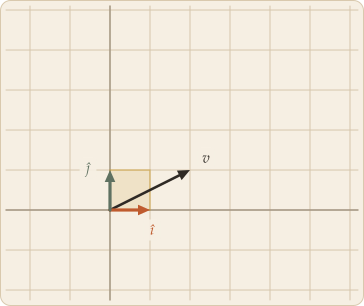
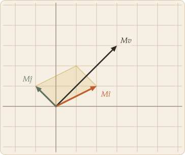

A matrix looks like a small table of numbers. It is better understood as a set of instructions for picking up the entire plane and putting it down somewhere else — stretched, rotated, sheared, or flattened — with every point moving at once and in step.
Skip to the board ↓A transformation is a function that takes a vector and returns a vector. What makes one linear is that it respects the two operations a vector space is built from: adding first and then transforming gives the same answer as transforming first and then adding, and the same holds for scaling. Visually that has a very concrete consequence — grid lines stay straight, stay parallel, and stay evenly spaced, and the origin does not move.
Now recall from linear combinations that every vector is already written over the basis: (x, y) means xî + yĵ. Feed that through a linear map and the two rules let you pull it apart:
Look carefully at what survived that step. On the left, x and y were multiplying î and ĵ. On the right, the very same x and y are multiplying T(î) and T(ĵ). The coefficients were never touched. A linear transformation does not renegotiate the recipe — it only relocates the ingredients. Where you used to take two steps along î, you now take two steps along wherever î ended up.
Which means the entire job reduces to two moves, and the first one you only have to do once:
Nothing else is required. Not the vector's length, not its direction, not where it sits — just its two coordinates, recombined over a moved basis. That is why a 2×2 grid of numbers is enough to specify what happens to infinitely many points at once: it is not describing the points, it is describing the two arrows they are all measured against. Stack those landing spots as columns and you have the matrix.

before

after M
Written out, the two columns of that figure's matrix are exactly those two landing spots:
Now push v = (2, 1) through, following the two steps. Watch the 2 and the 1 stay exactly where they are while everything they are multiplying gets swapped out:
That is the whole of matrix-vector multiplication: take x copies of the first column, y copies of the second, and add. It is the same tip-to-tail walk as linear combinations, taken over a basis that has been picked up and put down somewhere else — which is why the board below can get away with drawing only two bold arrows. Everything else, rotations and reflections and projections and the lot, is a question of which four numbers you choose.
It is tempting to read a matrix as something you apply to one vector at a time. The board above suggests a better picture: the transformation happens to the plane itself, and individual vectors are just along for the ride. Every dot moved, in step, under the same four numbers.
A few things survive that motion no matter which matrix you pick. The origin never moves, because M·0 = 0. Straight lines stay straight, and lines through the origin stay lines through the origin. Parallel lines stay parallel, and evenly spaced marks along a line stay evenly spaced. Everything else — lengths, angles, areas, orientation — is fair game.
Area, in particular, changes by a single fixed factor everywhere, and that factor is the determinant. If it reads 2, every region comes out twice as large. If it reads negative, the plane has been flipped over. And if it reads zero, the two columns lie along the same line, the plane has nowhere to spread out, and the whole thing collapses onto a line — many different starting vectors landing on top of one another, with no way back.
Put your own vectors into the plane below and watch where the same matrix sends them. Click the left panel to place one, drag its tip to move it, and read its image off the right.
Click to place a vector.
original space
after M
On the first board the pale grid is where the points started; the coloured one is where they are now. Clay marks the image of every horizontal line and sage the image of every vertical one, with the two axes drawn heavier and the images of î and ĵ as solid arrows. Those two arrows are the matrix — everything else on the board follows from them. The Amount slider blends from doing nothing to doing the whole transformation, which is a good way to see which parts of the plane travel furthest.
Swirl is the odd one out, and deliberately so. It keeps the origin fixed and it is perfectly well defined, but it turns distant points more than nearby ones, so the grid lines come back bent. That single failure — straight lines not staying straight — is enough to put it outside the reach of any matrix. Fixing the origin is necessary for linearity, not sufficient.
On the second board the two panels share a coordinate frame, so you can compare positions directly: the faint grid on the right is where the lines used to be, and the darker one is where they went. Try the Collapse preset and drag a vector around the left panel — its image slides up and down a single line and never leaves it, however far you move the original. That is what a zero determinant costs you, and it is why such a matrix cannot be undone.